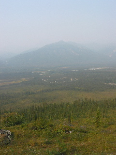
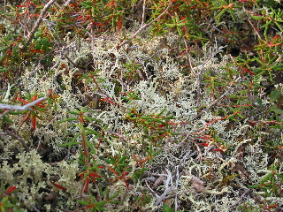

Day 6 — 2004/08/19
This morning we headed to a visitor center that was a joint of the BLM (Beruo of Land Management), National Parks, and the DNR (Department of Natural Resources). It was a neat place full of information that described the various bits about the land.
That afternoon, we hiked up a nearby hill. There are no more trails here, so it was ‘offroading’ through tundra now. Hiking on tundra is hard work. My legs got very tired, and so after a ways, some people and I stopped while the others went higher. You could look down and see abouts where our campsite was. It was a great view, even with the smoke.
We were going to head off in a plane this night, but the smoke was
very bad back at Fairbanks, so the planes were grounded. Instead then,
we went back to the visitor center and listened to a program.
(Then ‘raided’ a secret puppy stash and cuted
ourselves out.)